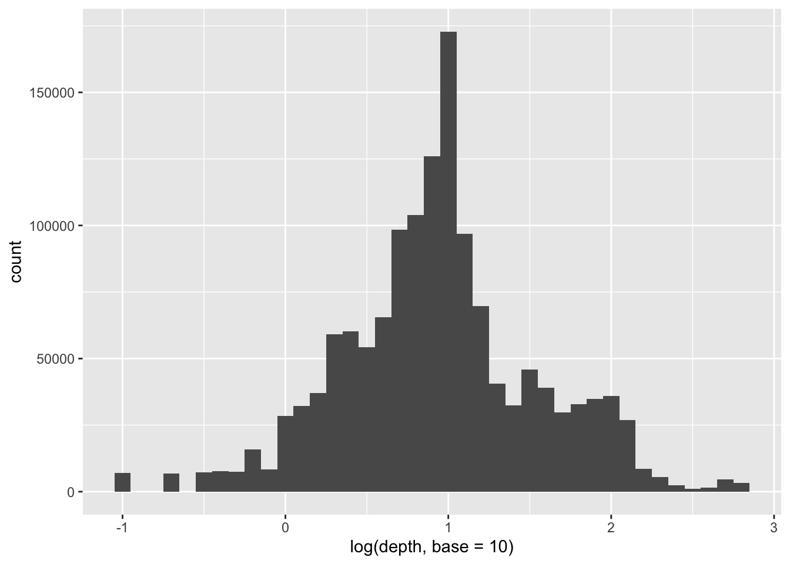

<SQL>
SELECT
place,
mag,
ROUND(PERCENT_RANK() OVER (PARTITION BY place ORDER BY mag) * 100.0, CAST(ROUND(0.0, 0) AS INTEGER)) AS percentile
FROM earthquakes
WHERE (NOT((mag IS NULL))) AND (place = 'Central Alaska')
ORDER BY place, mag DESC
The ntile() offered by dbplyr works a little differently from other window functions. Rather than preceding the mutate with a window_order(), we need to specify an order_by argument.1
Instead, I use CROSS JOIN (this is cross_join in dplyr).
SELECT*FROM earthquakes aCROSSJOIN b
The output in the book differs from one gets from running the code, so I add !(mag %in% c(-9, -9.99)) to get closer to the books output.
Note that in constructing mag_stats, I follow the book in using avg(mag) and stddev_pop(mag). In practice, I would probably lean more to using R-compatible mean(mag, na.rm = TRUE) and sd(mag, na.rm = TRUE), respectively. This makes little differ in practicethe only difference is that sd is translated into stddev_samp instead of stddev_pop, which is barely different in this casebut I believe it is helpful to be consistent where possible. Often I find myself moving the data processing from PosrtgreSQL to R or vice versa and this is much easier if the dbplyr code is consistent with the dplyr equivalent.
From the book, it turns out that the increase in earthquakes starting in 2017 can be at least partially explained by the status field. The status indicates whether the event has been reviewed by a human (reviewed) or was directly posted by a system without review (automatic). This can be seen in the following plot.3
earthquakes %>%mutate(earthquake_month =floor_date(time, "month")) %>%group_by(earthquake_month, status) %>%summarize(earthquakes =n(), .groups ="drop") %>%ggplot(aes(x = earthquake_month, y = earthquakes, color = status)) +geom_line()
CASEWHEN mag > p95 THEN p95WHEN mag < p05 THEN p05ELSE magENDAS mag_winsorized
can be replaced with a single line:
LEAST(GREATEST(mag, p05), p95) AS mag_winsorized
The R equivalents of LEAST and GREATEST are pmin and pmax, respectively. And dbplyr will translate pmin and pmax for us, so we can get winsorized data as follows.
quake_depths %>%ggplot(aes(x =log(depth, base =10))) +geom_histogram(binwidth =0.1)

The reason for this is not clear and I have filed a feature request to make the handling of ntile() similar to that of other window functions.
Without the select(earthquake_year), the following plot would take 4 seconds to produceversus 0.4 seconds needed here. This suggests that ggplot is triggering a collect() on fields that it does not need to make the plot.
Unlike the plot in the book, I leave observations with manual status in the plot, as they are in the SQL query.
I simplify the SQL from the book assuming that the table already includes a CROSS JOIN with the SQL equivalent of extremes and I use shorter variable names for the extremes.